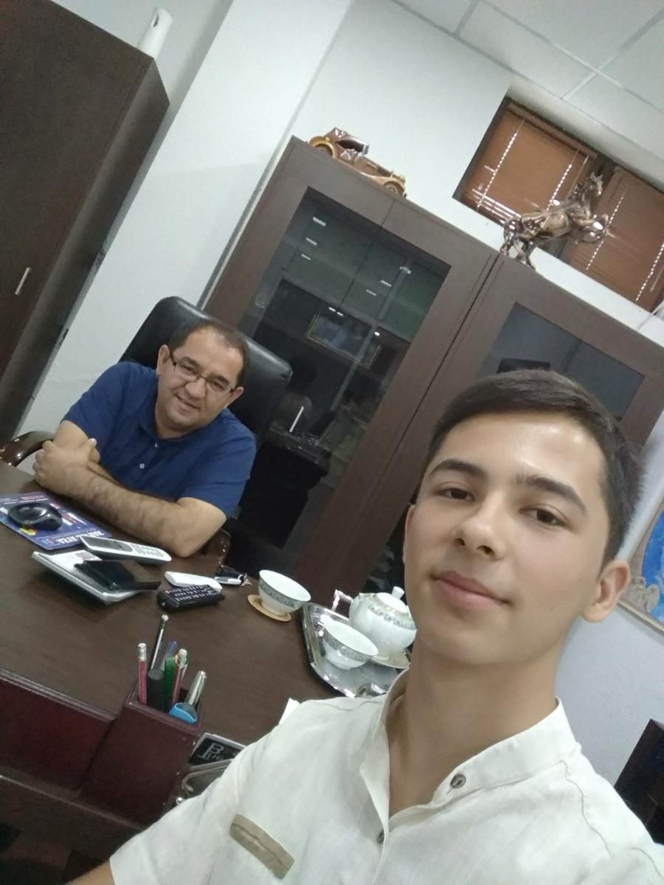

Hammasi bitta kuzatuvdan boshlandi
2018-yilning avgust oyi edi. Oʻsha paytda dizayner doʻstim Yahyo bilan birga Fantasy marketing agentligida ishlardik. Bir kuni koʻzimiz MFaktor loyihasiga tushdi.
Unda tadbirkorlar bilan intervyular, foydali suhbatlar bor edi. Oʻsha vaqtlarda biz biladigan bunday suhbatlar faqat rus tilida edi — Hikmat aka Abdurahmonov olib boradigan «Лаборатория бизнеса». MFaktor esa oʻzbek tilidagi ilk va yagona sifatli suhbatlar edi. Eng muhimi, savollarni oddiy jurnalist emas, tadbirkorlarning oʻzi — ustozlarimiz Hasan aka va Husan aka Mamasaidovlar berardi. Shuning uchun suhbatlarda haqiqiy biznes tajribasi haqida gap ketardi.
Keyin qarasak, loyihaning kuzatuvchilari juda-juda kam. Maʼlumotlar esa bebaho. Oʻyladim: SMMʼdan bilimim bor, kel, shu loyihani rivojlantirishga hissa qoʻshaylik. Yahyobek doʻstim bilan shunga kelishdik va men ustozlarga yozdim.
Kutilmagan taklif
Allohning irodasi bilan, oʻsha 2018-yil avgustida ustozlarimizning otalari kasallik sababli vafot etdilar. Alloh rahmat qilsin. Bir-ikki hafta xabarlasha olmadik. Avgust oxirida yana yozdim.
Shunda Hasan aka meni Tinchlikdagi Registon toʻyxonasiga oshga taklif qildilar. Tasavvur qiling: oldin bir marta ham koʻrishmaganmiz, birdaniga ustoz oshga chaqirdilar. Dasturxonda Botirjon aka Orifjonov va yana bir nechta mashhur tadbirkorlar bilan birga oʻtirdim.
Oshdan soʻng ustozning Captiva mashinalarida Mirobod dehqon bozorining orqa tomonidagi Dekos ofisiga bordik va u yerda suhbatlashdik.

Keyin Hasan aka Husan akaga qoʻngʻiroq qildilar. Husan aka kelib, meni uylariga olib ketdilar.
Hoji otaning kompyuteri
Ustozlarning uyi Glinkada, ofisdan uncha uzoq boʻlmagan joyda edi. Uyga kirganimda ustozlarimning onalari — hoji onani koʻrdim, Qurʼon tilovat qilib oʻtirgan ekanlar. «Mashaalloh» deb juda havas qilgandim.
Keyin meni marhum hoji otaning xonalariga olib kirishdi. Devorlar toʻla kitoblar va audiodisklar, kompyuter ham eng soʻnggilaridan. Yoshlari ulugʻ boʻlsa ham, soʻnggi texnologiyalarga juda qiziqqan ekanlar.
Koʻpincha yoshi kattalardan «Boʻldi, qaridim, endi ishlamayman», «Wi-Fiʼni yoqib ber», «Mana bu ilovani oʻrnatib ber» degan gaplarni eshitamiz. Agar texnologiyalar bilan doim yonma-yon yurib, ularni oʻrganib borsak, zamon bilan hamnafas boʻlib, doim yosharib yurar ekanmiz.
Men ishni aynan shu — marhum hoji otaning kompyuterida boshladim.
Birinchi vazifa va tizimlilik darsi
Birinchi vazifamiz MFaktor koʻrsatuvlaridan nuqtalar (insaytlar) kesib chiqish boʻldi. Shu yerda Husan akadan navbatdagi muhim narsani oʻrgandim — kompyuterdagi tizimlilik.
Oʻsha paytda, adashmasam, MFaktorʼda 17 ta koʻrsatuv suratga olingan edi. Har biri alohida papkada, hamma narsasi tartib bilan joylashgan. Shunda tushundim: tajribali odamlarning butun hayoti tizim asosida quriladi. Ular hech narsani «kasha» qilib qoʻyishmaydi. Bu — birinchi qoida.
Bilimning qadri
Ustozlarning oʻgʻillari Ulugʻbek oʻsha paytda Angliyadagi universitetga oʻqishga ketishi kerak edi. Shuning uchun ilmlarni menga oʻrgatishdi. Ulugʻbek bilan birga tajribali mutaxassis Ali akadan montajni oʻrgandik. Ustozlar har bir dars uchun Ali akaga juda koʻp pul toʻlashlarini aytib, «Qadriga yetinglar» dedilar. Bu ham men uchun alohida dars boʻldi.
8 oy bepul va birinchi oylik
Vaqt oʻtgan sari juda koʻp narsani oʻrgandim. 8 oy davomida MFaktorʼda bepul ishladim. Keyin loyihaning ikkinchi ofisi ochilganda rasmiy hujjatlar boʻyicha ustozdan keyin ikkinchi boʻlib ishga qabul qilindim. Ikkinchi ofisimiz oʻsha Mirobod dehqon bozorining orqasidagi Deli ofisining yertoʻlasida joylashgan edi. Oyligim, adashmasam, 500 000 soʻmdan boshlangan.
Vaqt oʻtib jamoaga yangi yigitlarni jalb qildik va loyiha rivoji yoʻlida ishladik. Hasan aka haqiqiy muzyorar (ledokol) edilar — yangi gʻoyalarni berib ketaverardilar. Biz esa ularni amalga oshirishga harakat qilardik.
2 000 dan 483 000 gacha
MFaktorʼga qoʻshilganimda YouTube kanalida taxminan 2 000 ga yaqin obunachi bor edi. 2 yil ichida 100 000 ga chiqdik va YouTube kumush tugmasini oldik. 2026-yil 12-oktabr holatiga koʻra kanalda 483 000 obunachi bor.

MFaktor doirasida juda koʻp loyihalar qildik. Nasib qilsa, ular haqida keyingi maqolalarda aytib beraman.
Shu hikoyadan 7 ta saboq
- Kuzatuvchilar soniga emas, qiymatga qarang. Kuzatuvchisi kam, lekin mazmuni kuchli loyiha — eng katta imkoniyat.
- Birinchi qadamni oʻzingiz qoʻying. Hammasi bitta xabardan boshlandi. Javob kelmasa, sabr qilib qayta yozing.
- Oʻrganish yoshga qaramaydi. Texnologiyalar bilan hamnafas yurgan odam doim yosh boʻlib qoladi.
- Tizimli boʻling. Fayllar, papkalar, ishlar — hammasi oʻz joyida boʻlsin. Tajribali odamlar hech narsani «kasha» qilmaydi.
- Bilimning qadriga yeting. Kimdir oʻsha bilim uchun katta pul va vaqt sarflagan.
- Tajriba uchun ishlashdan qoʻrqmang. 8 oylik bepul mehnat keyingi barcha yutuqlarga poydevor boʻldi.
- Gʻoya egasining yonida bajaruvchi boʻlish ham sanʼat. Muzyorar yoʻl ochadi, jamoa esa oʻsha yoʻlni bosib oʻtadi.